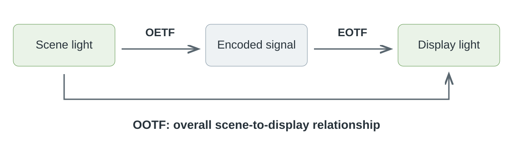

Opto-Optical Transfer Function (OOTF)
A camera points at a scene, and a screen later produces light for the viewer. The opto-optical transfer function, or OOTF, describes the relationship between those two kinds of light across the complete imaging system.

The OOTF spans scene light to reproduced light. A real chain can include exposure, grading, tone mapping, and viewing adjustments in addition to the illustrated transfer stages.
Compose the functions rather than cancel their names
The OETF describes light becoming a signal. The EOTF describes a signal becoming light. Combining those operations determines the overall scene-to-display relationship.
Use a deliberately simple model. Suppose capture encodes relative scene light E as E^0.5, and display produces relative light V^2.4 from the encoded signal V. For E = 0.25:
- Capture gives V = 0.25^0.5 = 0.5.
- Display gives L = 0.5^2.4, approximately 0.189.
- The combined relationship is L = E^1.2, since 0.5 × 2.4 = 1.2.
The result is not the original relative light 0.25. The system's overall rendering has changed the relationship. This is a constructed demonstration of function composition; specified video functions can include linear segments, offsets, and luminance-dependent operations, so their complete equations must be combined.
Why a useful reproduction can change scene contrast
Looking at a screen in a room differs from standing in front of the photographed scene. The screen has a limited light range, the image occupies part of the field of view, and the viewer adapts to a particular surround. Reproducing the scene's light numerically, without accounting for those conditions, need not produce the intended appearance.
An imaging system can therefore include an overall rendering that adjusts contrast for its reference viewing environment. Camera encoding and display behavior are parts of that design. An exponent greater than one in the simplified overall model darkens middle relative levels while leaving zero and one unchanged.
This is an appearance relationship, not an instruction to use one fixed extra filter on every produced movie. A colorist may already have established the intended display image during grading.
Locate the rendering in the source you have
A scene-referred representation retains a relationship to captured scene light. A display-referred representation describes an intended produced image. The same named operations cannot be added indiscriminately to both: applying a scene-to-display rendering twice can alter a picture that was already rendered.
For HLG, the system relationship includes adaptation to display and viewing conditions. PQ provides an absolute reference-display interpretation. These systems place parts of the rendering relationship differently.
Emby normally begins with already authored media. The playback path needs to know which interpretation it receives and adapt that produced picture to the output. The diagram is useful for locating an operation: did it occur in capture, in production, in the app's presentation, or in the display? That location determines whether the required overall rendering is being completed or applied again.